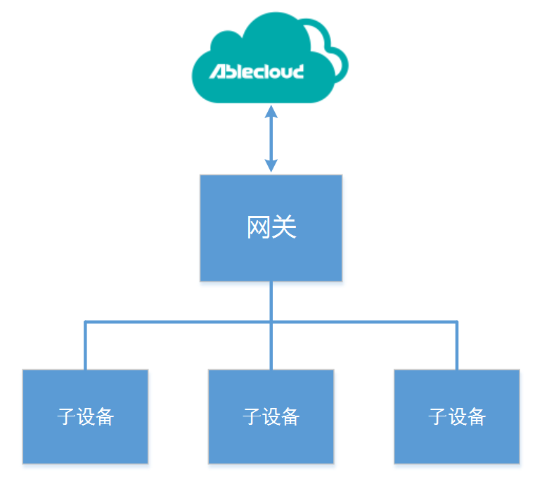
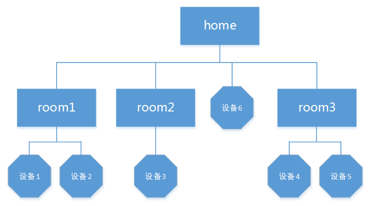
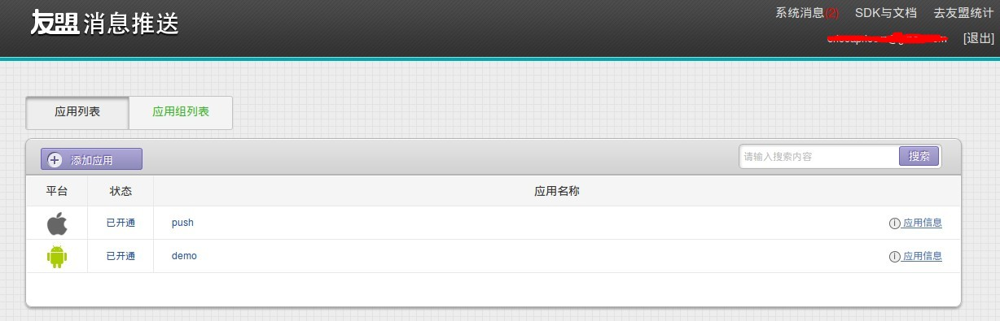
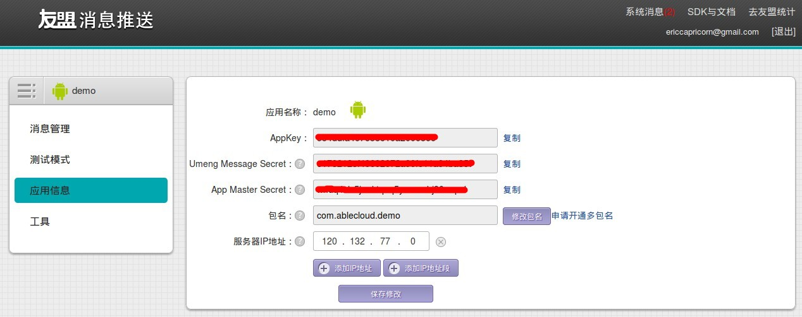
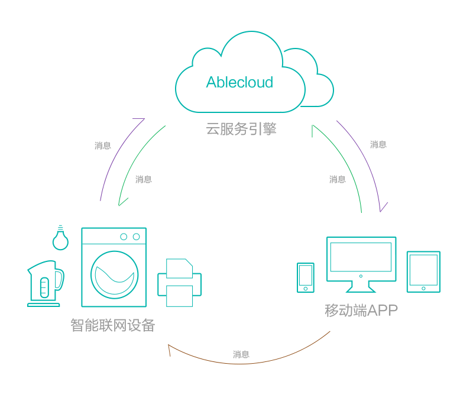

接入流程
基本概念
智能硬件架构模型

上图是目前常见的智能硬件联网解决方案，从图中可以看到，整个硬件联网闭环存在三条消息流，分别表示不同的消息传递方式。
远程控制 -- 如图中绿色箭头所示，用户在终端(如智能手机上)，发送控制命令到AbleCloud的云端，云端再将消息发往具体的某一设备，实现远程控制。 比如在酷热的夏天，下班回家前，您可以提前通过手机将家里的空调打开，并及时的查看家里温度情况，当您回到家时即可享受一片清凉。
设备直连 -- 如图中棕色箭头所示，当用户和设备在同一局域网内时，用户可以通过终端直接向设备发送控制命令实现直连，从而实现更加可靠的控制。设备直连的优势在于，当家里的公网访问出现故障时，您的智能设备仍然具备可用性。
事件上报 -- 如图中紫色箭头所示，设备可以将运行中的状态、传感器采集到的各类数据上传到云端进行数据存储，供厂商进行数据分析和设备管理，也可以将上报的消息推送数据给用户。例如，当家里的安防系统出现异常时，发送报警数据到云端，云端再将该消息通过设定好的方式推送给客户，让用户及时了解家里所发生的情况，方便及时处理和应对。
基本概念
1. 联网固件
AbleCloud提供的联网固件，能够适配多个目前市面上常用的WiFi厂商，只要将这些联网固件烧入这些厂商的WiFi模块，就能够实现设备到云端的连接。对于目前AbleCloud尚未适配的联网模块，AbleCloud提供模块和云端握手的SDK，厂商只需要对SDK中的底层驱动部分进行适配即可实现设备到云端的连接。
2. APP端SDK
我们提供Android、iOS两大平台的SDK。厂商可利用AbleCloud提供的SDK快速开发控制智能硬件的APP。SDK提供了”帐号管理”、”Smartconfig”、”设备发现”、”直连访问控制管理”、”OTA管理”、”推送服务”等功能。
3. 帐号管理服务
考虑到所有的智能设备，最终都需要由用户来操作，因此AbleCloud提供了安全的帐号体系，开发者可以直接用云端的帐号管理服务，实现自己的帐号系统，如用户注册、登录、修改密码、找回密码以及手机验证码相关的功能。
4. 设备管理服务
随着智能设备的逐步普及，用户家庭中会出现越来越多的智能设备，为了便于家庭成员使用这些设备，需要对这些设备进行组织、管理；同时，权限认证等安全问题也会面临前所未有的挑战，AbleCloud提供了通用设备”绑定”、”解绑”、”分享”、”分组授权”等功能，实现了基于角色的访问控制。
5. 存储服务
AbleCloud支持分布式和非分布式两种持久化存储模型，厂商可以根据业务需求、数据量大小、读写场景进行灵活选择，支持布尔、整形、字符串、浮点数等类型，支持单行的CRUD以及范围扫描等操作，同时提供了排序、聚合运算等基本功能，对于某些特殊场景还可以提供局部索引等高级功能。存储服务通过数据多副本以保证数据的安全性，并通过自动寻址、负载均衡、读写分离等功能来实现请求的高可用性和性能的可扩展性。
6. 云服务引擎
云服务引擎，是我们提供的PaaS平台，包括开发、测试框架以及完整的运行平台。
云服务开发引擎 AbleCloud封装了开发Web服务的框架，厂商的开发人员利用这个开发框架，可以完全不用关注服务和APP端、和设备端RPC交互的细节，而是将全部精力集中在服务具体业务逻辑的实现上。开发框架提供了完整的web service框架，让您用很少的代码即可实现一个服务，并提供了完备的单元测试、集成测试方案和工具包。
在云服务引擎上，AbleCloud开发了通用的云端服务，能够满足大多数场景下的设备管理需求。对于通用云端服务能够满足需求的设备，厂商不需要进行任何云端服务的开发。当通用服务不能够满足厂商个性化需求的时候，基于AbleCloud的云服务引擎，厂商也可以快速开发出自己的定制云端服务。
云服务运行平台 当厂商的自定义云端服务开发完毕并测试完成后，开发人员只需要将服务可执行程序提交到AbleCloud提供的PaaS平台，之后AbleCloud将自动完成发布、运维、日志收集、故障自动修复、服务监控报警、定时任务等工作。
7、OTA
OTA（Over－the－Air Technology），即空中下载技术。在智能硬件领域，当设备固件需要升级的时候，可以借助OTA实现远程升级。 对于蓝牙设备，OTA需要先将固件下载到手机上，APP启动后连接设备，然后将手机中的固件下发到蓝牙设备进行升级。 对于非蓝牙设备，AbleCloud提供两种OTA模式，一种是静默升级，一种是需要用户确认的升级。对于静默升级，不需要任何用户的交互操作，在厂商管理后台设定升级版本、升级时间、升级地域后，连接到云端的设备会自动完成升级。对于需要用户确认的升级，厂商在管理后台提交新的固件版本后，云平台会把固件提前下载到设备当中，但是不进行升级操作，而是当用户启动APP的时候，给用户一个升级提醒，由用户来确认是否升级。
8、云平台对接
AbleCloud目前与微信硬件平台、京东智能云等物联云平台实现了对接。接入AbleCloud的设备可以通过微信或者京东微联APP实现对设备的管理、控制和查看等操作。如果厂商自己研发了APP，可以通过APP内的第三方登录将已经通过微信或者京东微联绑定设备的用户导入到自己的APP。 需要注意的是对接微信硬件平台时，由于微信只能够通过扫描二维码获取到设备的相关信息，所以，在生产设备前，厂商需要将所有出货的设备的ID提交给微信。微信会返回对应的每台设备的字符串。厂商将该字符串转换为二维码后粘贴到对应设备上才能够被微信识别。 和京东智能云对接时，对于每款产品京东会生成一个对应的二维码。京东微联通过扫描该二维码识别产品类型，然后调用厂商提交的H5页面到微联APP。不同与微信要求每台设备二维码唯一，对于同一款产品，京东的二维码是相同的，厂商将该二维码印刷到说明书或者粘贴到设备表面即可。
名词解释
工程相关
-
主域：Major Domain，是公司层面的概念，AbleCloud为每一个使用AbleCloud平台的公司分配一个唯一主域，如Google。
-
产品子域：SubDomain，是公司的某一款产品，如Glass。在管理后台创建产品时需要填入相应的产品子域名称。
-
产品：和产品子域等同的概念。一款产品就是一个子域。
-
服务：即开发者开发的具体Service，如Controller。一个服务，必须属于某一主域、子域。
-
版本：为了支持服务升级、回滚等，AbleCloud支持同一服务创建多个版本。版本由Major Version、Minor Version、Patch Version来标示。
-
数据点：表示设备可以和云端交互的数据，按照数据点来划分。在创建产品的时候，需要在云端创建设备的数据点。以后云端和设备的交互都按照数据点对应的格式进行。APP和云端的交互以及APP本地局域网和设备的交互也按照数据点的定义的格式进行。 服务相关
-
云端通用服务：由AbleCloud提供的云服务，如帐号管理、设备管理。
-
自定义服务：由厂商基于AbleCloud的云服务引擎开发的自定义后端服务。
-
设备虚拟：指云端将设备上的数据通过网页直接展示出来。方便在APP还没有开发的阶段对设备的功能进行调试。用户可以在网页上查看数据，还可以模拟APP在网页上给设备发送指令。
-
虚拟设备：指云端虚拟出一个用户已经定义的产品的设备。方便在设备还没有开发完成时对APP的调试。虚拟设备可以模拟真实设备上报数据，也可以显示APP发来的指令。
帐号相关
-
管理员：对设备有终极权限的用户。可以对设备进行绑定、解绑、分享、添加子设备、删除子设备等操作，还可以将设备对普通用户进行授权管理。
-
普通用户：即智能设备的终端用户，对设备有查看和控制权限，但是没有管理权限。
-
开发者：产品的开发者。在AbleCloud的Web页面完成注册后可以在AbleCloud的后台进行产品的开发和管理。免费使用AbleCloud提供的各种开发工具和源代码。
设备相关
-
设备：Device，即厂商生产的具体的一台设备。只有被绑定的设备才能被控制。在没有指明是“网关”还是“子设备”时，Devie可以表示任何有设备ID的独立设备、网关、子设备。
-
网关：Gateway,是指能够和云端直接连接，完成其他协议到TCP/IP协议转换功能的设备。网关下面一般带有子设备。网关可以有独立的功能也可以纯粹作为一个协议转换的通道。
-
子设备：Subdevice,指通过网关和云端进行通信的设备。子设备和网关有隶属关系，对网关有权限的用户也对子设备有权限。子设备可以单独进行权限管理。
-
Smartconfig：是德州仪器开发的针对智能设备APP端SDK将家庭WiFi的SSID以及密码通过加密后广播给智能设备，智能设备收到后自动完成配置并连上WiFi。
-
Ablelink：AbleCloud对Smartconfig协议进行封装然后添加云端握手和本地局域网广播后的协议。
-
流量控制：对带宽等资源进行合理分配，防止资源抢占和拥堵；
-
握手认证：采用优化后的非对称加密算法，提升设备的安全性。
-
局域网直连：让手机可以在局域网内直接连接和控制设备；
-
命令转发：采用AbleCloud优化的传输协议，将APP的对设备的指令通过云端发送到设备。
-
数据上报：基于AbleCloud和设备的安全长链接通路，设备将数据上报到云端然后云端推送给用户或厂商自定义服务。
通用
-
设备密钥：设备和云端交互的时候，在握手阶段需要进行密钥验证。握手阶段采用RSA非对称加密，云端需要有设备的公钥。AbleCloud支持两种密钥管理方式。一种是该产品的所有设备使用相同的密钥对；一种是该产品的每台设备有独立的密钥对。对于第一种，AbleCloud可以直接生成密钥对，设备开发人员将私钥烧到设备固件中即可。对于第二种，AbleCloud提供密钥生成工具，可以生成和设备物理ID一一对应的密钥对。需要密钥文件上传到云端，设备才能够和云端通信握手成功。
-
设备绑定：用户通过APP端对设备进行绑定，第一个绑定的人成为管理员，其他人只能够通过管理员的分享或者邀请绑定设备。只有通过绑定的用户才能控制设备。
-
设备物理ID：设备出厂时，由厂商生成的ID，通常为16个字符的字符串。可以使用每台设备单独烧制的方式生成，也可以使用设备的MAC地址等信息生成。
-
设备逻辑ID：设备在激活后被管理员绑定时生成的ID，通常为长整数。
设备开发相关
厂商在开发每个产品时，首先向AbleCloud申请设备的许可证，需要提供如下信息给AbleCloud：
-
设备版本：4字节
-
设备公钥（RSA256）：32字节的整数，与设备密钥是一对。在设备批量出货前需要在管理后台提交设备公钥。在设备首次连接云端握手时，AbleCloud服务器用该公钥来加密给设备发消息。可以一款产品设置一对公钥密钥，对于安全性要求高的产品，也可以每台设备一个独立的公钥。
-
设备ID（物理ID）：16字节，选填。对于安全性要求高的场景，可以用来和公钥一一对应。 Ablecloud会为每个产品分配一个产品域(Domain+SubDomain)信息（8字节）。 厂商当完成申请后，需要把如下信息烧制到设备内部存储中（如Flash），这些信息包括如下内容：
-
设备版本：4字节
-
设备密钥（RSA256）：112字节的整数（需要和公钥保持一致）
-
设备域信息：8字节（两个字节的Domain加上6个字节的SubDomain）
-
设备ID：可以烧制独立的设备ID，也可以使用WiFi的MAC地址或其他设备已有的ID。
开发流程
一、定义产品
“产品定义”是作为合作伙伴使用ablecloud服务进行开发的第一步，是指在AbleCloud的厂商管理后台中对产品及功能信息进行设定，设定成功后的产品即可按照后续步骤进行开发并有效使用ablecloud的相关云服务。 产品定义的内容包括：
- 产品名称
- 设备通信方式：可选择蓝牙、WiFi、Zigbee、RF、GPRS等通信模式
- 设备通信模块型号：在列表中的模块AbleCloud已经完成了适配，烧入AbleCloud提供的固件就可以直接连接到云端。
- 产品功能数据点（可选）：
注1：合作伙伴不进行“通信模块”和“产品功能点数据”的定义也可以使用AbleCloud的云服务，只是由于对应的数据点的格式AbleCloud无法识别，因此“设备虚拟”、“虚拟设备”、“数据统计”等服务都不可用。
注2：对于还不在AbleCloud支持列表里的模块，AbleCloud可以协助开发或者提供握手SDK由厂商完成适配。 AbleCloud支持三种设备的数据类型：
- 一种是JSON格式的，适合MCU支持JSON解析的设备；
- 一种是KLV格式的，采用AbleCloud自定义的协议，与二进制码流类似，节省设备的运算资源，具体协议格式参见：开发框架-设备-KLV；
- 一种是二进制码流，这种数据格式AbleCloud不能够解析，因此部分可视化功能不可用，如设备虚拟。
在云端定义好设备端各个功能点的数据包以后，设备和APP直接的数据交互（无论是经过本地局域网还是云端）都必须采用数据包定义的内容进行，具体数据包的格式定义参考：开发框架-设备-通信。数据点和数据包包只能够定义设备上的数据，而除了数据包之外的APP和云端的交互由厂商的自定义服务完成，同时该部分数据格式由厂商自己定义。
二、功能开发
2.1 设备开发
为了保证安全，对于设备和云端的交互AbleCloud采用了RSA加AES的加密通信方式。该加密协议已经烧入AbleCloud支持的WiFi模块中(支持列表详见基本介绍-功能介绍-设备管理-独立设备。对于尚未完成适配的联网模块(部分WiFi，以太网，蜂窝网络)，AbleCloud提供已经封装好的和云端握手交互的SDK，厂商只需要调用该SDK，更改底层驱动即可实现联网模块的适配。
对于“设备绑定”、“本地通信密钥交换”、“OTA”等功能，设备需要和云端进行固定格式的交互并实现对云端相应指令的响应。对于网关类型的设备，为了实现对网关下面子设备的独立管理，也需要设备端（网关）实现相应的指令（少于5个）。
对于设备和本地APP、设备和云端的数据交互，设备只需按照定义产品时生成的数据格式，进行发送和解析即可。
2.2 APP开发
AbleCloud提供了“帐号管理”、“设备绑定“、”独立设备管理“、”网关型设备管理“、”设备分组管理“、”OTA“、”实时消息“、”推送“等APP开发需要的SDK，进行移动端开发的时候，开发者只需要开发用户交互界面，即可实现大多数和设备相关的功能的开发。
2.3 微信开发
AbleCloud在后台和微信硬件平台进行了对接，同时在云端提供了PHP的开发框架。 与微信的交互是指在开发者的微信公众号中实现设备功能，允许用户通过微信公众号的交互界面实现对设备的智能控制。因此除了在AbleCloud的平台注册并定义产品外，还需要有一些和微信公众号相关的操作，如下：
- 申请微信公众号，并开通其设备功能；
- 完成设备在微信平台的入库、授权流程，并为设备生成对应的二维码；
- 基于AbleCloud提供的微信公众号SDK，开发微信公众号的后台服务及前端界面（公众号界面菜单及HTML5页面），在该服务中实现微信用户信息与AbleCloud用户信息同步、微信设备信息与AbleCloud设备信息同步、设备控制等功能。
2.4 云端服务开发
AbleCloud提供了通用的云端服务，如“帐号管理“、”设备管理“、”设备数据存储“、”OTA“、”推送管理“。对于这些通用功能可以满足需求的产品，不需要进行任何云端服务的开发。
对于通用服务不能够满足需求的产品，AbleCloud在云端提供了开发框架，厂商可以对“用户帐号“、”设备“、”云端服务“，”存储“进行定制化开发。云端服务开发框架参考：开发框架-云端 云端服务开发厂商只需要注重功能即可，“服务的上线和部署“、”数据的分布式存储“、”数据的多重备份“等底层功能AbleCloud已经做好封装。
三、调试
AbleCloud云端提供设备虚拟和虚拟设备服务。
设备虚拟服务-- 在APP尚未开发完善，但是需要进行设备调试的时候，厂商管理后台通过设备虚拟，可以从WEB页面直接看到当前连接的设备和设备上报的数据，同时可以通过Web页面模拟APP给设备下发数据。
虚拟设备服务-- 当进行移动端的调试的时候，云端提供虚拟设备服务。基于厂商在后台创建的产品，AbleCloud管理后台可以启动对应的虚拟设备。移动端可以绑定该虚拟设备，给设备发送消息；虚拟设备也可以模拟真实的设备上报消息。 借助AbleCloud提供的工具分部调试成功以后，厂商可以进行整体联调。
功能介绍
帐号管理
AbleCloud提供两种帐号系统：
- 一、通过APP注册的用户为普通账户；
- 二、通过第三方帐号（比如微信，微博，QQ， 京东帐号）OAuth协议登陆的帐号为第三方帐号。
1、AbleCloud普通帐号注册：
- 一般注册需要引导用户填写手机号码，然后发送短信验证码，为了防止频繁发送短信，一般设置倒计时1分钟（国内用户推荐使用手机注册）；
- 普通帐号也可以通过邮箱注册，部分地区的国外用户习惯用邮箱注册，也可以邮箱、手机号信息都写，对于仅通过邮箱注册的用户，会将验证码发送到注册邮箱；
- 用户填写收到的验证码，通过验证码来验证是否是真实的用户。验证码的有效期为10分钟，验证通过后会立即失效；
- 注册中用户可以设置昵称，昵称没有唯一性要求，不同的用户可以重名，但不能通过昵称进行登陆。
2、普通帐号和第三方帐号绑定：
- 普通帐号在登陆后，可以绑定多个第三方帐号（微信、微博、QQ等）。绑定第三方帐号成功后，可以通过第三方帐号直接登陆系统，并获取此普通帐号的相关数据，比如获取设备列表信息。普通帐号绑定第三方帐号时，不允许绑定一个已经注册或者已经被绑定的第三方帐号；
- 系统支持第三方帐号的直接注册登陆，APP端在完成OAuth认证登陆之后，可以直接进行设备管理。同时，登陆后的第三方帐号可以绑定一个未被注册的普通帐号，绑定普通帐号成功后，可以通过普通帐号直接登陆系统，并获取此第三方帐号的相关数据，比如获取设备列表。
设备管理
独立设备
独立设备指的是能够直接访问互联网、和云端进行交互的设备。类似的还有蜂窝网络设备和以太网设备。
典型的独立设备包括通过WiFi连接网络的设备、通过蜂窝网络连接网络的设备和通过以太网连接网络的设备。
对于市面上常见的WiFi模块，AbleCloud都进行了适配，已经完成适配的WiFi模块见下表：
| WIFI芯片 | 模块厂商 | AirKiss | Smartconfig |
|---|---|---|---|
| MTK7681 | 卓立合 | 不支持 | 支持 |
| QCA4004 | 江波龙 | 支持 | 支持 |
| 思存 | 不支持 | 支持 | |
| 航锐 | 不支持 | 支持 | |
| MTK | 汉枫 | 支持 | 支持 |
| Marvel-88MC500 | Marvel | 不支持 | 支持 |
| Marvel | 庆科 | 支持 | 支持 |
| QCA4004 | RAK | 不支持 | 支持 |
| 联盛德 | 联盛德 | 不支持 | 支持 |
对于AbleCloud还没有进行适配的模块，AbleCloud提供上层交互所需要的SDK，厂商自己将下层驱动更改一下即可完成适配工作。
对于蜂窝网络和以太网设备，AbleCloud同样提供开发需要的SDk，厂商只需要更改和设备相关的下层驱动 即可完成适配。
AbleCloud在移动端提供了Android、iOS、和JS的SDK，SDK中包括设备管理需要的接口。
AbleCloud的设备管理采用基于管理员的方案。即每个设备都有一个管理员，对设备有终极管理权限，可以将设备分享给其他人或者收回其他人的使用权。其他人为普通用户，普通用户只有使用权。普通用户需要从管理员那里获得设备的使用权。
独立设备安全管理策略
- 第一个绑定的人有管理员权限
- 只有管理员能够分享设备，或者将某个用户添加成为具有权限的用户。同时管理员可以取消普通用户的绑定
- 更换管理员，其他成员绑定关系不变
- 更换设备、所有绑定关系不变
- 管理员删除设备，所有绑定关系解除，设备可视为新设备。设备上也有取消所有绑定关系的接口，厂商根据需求调用。
- 管理员删除设备后，所有用户对设备产生的历史数据都不可见。但该数据并未删除，只是与原设备的逻辑ID对应
- 厂商可以自己决定数据是记录在设备ID下还是用户ID下。对于医疗类和人相关的设备，建议记录在用户ID下
网关设备
 网关型设备是指结构如下图所示包括网关和子设备类型的设备。
其中网关是只能够通过TCP/IP协议和云端通信并且能够将其他协议转换为TCP/IP协议的设备。网关与子设备通信可以是Zigbee、蓝牙、RF、Zwave、易能森、PLC等任意协议。AbleCloud只能够直接管理到网关，并不能够和网关下面的子设备直接通信。若要对网关下面的子设备作为独立设备进行管理，需要网关将子设备的ID信息按照约定的格式和云端交互。
子设备在云端需要独立定义，子设备有独立的产品名称和subdomain用以取费子设备类型。
为了实现对网关和子设备的单独管理，AbleCloud在WiFi这种独立设备管理模型上进行了扩展。
网关型设备的管理采用和WiFi类设备相同的管理员负责模式，因此只有网关的管理员才对网关有管理权限。同时网关和子设备有主从关系，即子设备属于网关。因此，网关的管理员就是子设备的管理员。
网关的管理员可以选择将网关分享给普通用户，这时候，普通用户对网关和网关下面的所有子设备有使用权；管理员也可以选择只将子设备分享给普通用户，这时候，被分享的用户只对该子设备有使用权，对其他子设备以及网关没有使用权。
网关型设备安全管理策略
- 第一个绑定的人有管理员权限
- 只有管理员能够分享设备，或者将某个用户添加成为具有权限的用户
- 更换管理员，其他成员绑定关系不变。只有管理员能够选择更换管理员。更换管理员后原管理员变为普通用户。
- 更换设备、所有绑定关系不变
- 管理员删除设备，所有绑定关系解除，设备可视为新设备。普通用户删除设备，只是自己放弃对该设备的使用权，对其他所有用户无影响。
- 管理员删除设备后，所有用户对设备产生的历史数据都不可见。但该数据并未删除，只是与原设备的逻辑ID对应。
- 厂商可以自己决定数据是记录在设备ID下还是用户ID下。对于医疗类和人相关的设备，建议记录在用户ID下。
- 网关的安全策略同WiFi的设备一样，第一个绑定的人有管理员权限
- 子设备的安全策略为网关的管理员对接入网关的子设备有管理员权限
- 管理员如果将网关分享了，那么被分享用户的权限包括网关和网关下的子设备
- 管理员可以单独分享子设备，被分享用户的权限只包括子设备
- 管理员删除网关，网关和子设备、用户和网关、用户和子设备的所有绑定关系解除
- 当把子设备添加绑定后，子设备也是和该网关的管理员绑定的，若要把该网关和其他人绑定，需要原管理员解绑
home模型
考虑到用户管理的设备量变多的时候的分组管理需求，AbleCloud开发了home模型。 AbleCloud的home模型在权限管理上继承之前的WiFi设备以及网关型设备，这也正好和HomeKit的权限管理方式一致——基于管理员的权限管理。 home模型的组层次如下图所示：

说明：
- home是有管理权限的组。创建home的人成为该home的管理员。类似于网关，home的管理员是下面所有设备的管理员。管理员可以将home授权给普通用户，这时候，home下面的所有设备都授权给该用户。Home的管理员只能够将新设备或者自己有管理权限的设备放到home里。普通用户不能够在home中添加或者删除设备。
- home下面可以创建room，room只是方便管理并不能进行权限的授予和取消。
- home和room下面都可以有设备。这套组模型向下兼容WiFi设备和网关型设备，也就是说home和room下面可以是WiFi设备也可以是网关型设备，WiFi型设备和网关型设备的设备管理的接口同样都可以使用。同时，设备端固件不需要进行任何改动。
- 任何设备和room都有标识其所在home的属性。Home可以列出其下面有的所有room和home下的所有设备。room也可以列出该room下的设备。
- 可以先绑定设备再将设备添加到home中，但是建议先创建home，然后将新的设备添加到home中。
- 往home中添加的设备必须是以下三种之一：一种是新设备，一种是已经被之前的管理员解绑的设备，还有一种是该home管理员的设备。
- 创建room时必须指定其所属的home。将设备放入room前必须将设备先放入home。
需要单独说明的是，分组模型只是设备权限管理的模型，与用户的自定义场景设置没有关系。如果用户需要自定义场景对分组内的设备集中操作时，开发者可以自己定义场景，然后存储到云端的个人帐号下。在该用户在其他手机登录或帐号退出再登录时，可以从云端取出该用户的个人自定义设置。这种用户自定义的场景属于用户个人，不能够在多人之间分享。
OTA
OTA（Over－the－Air Technology），即空中下载技术。 在智能硬件领域，当设备固件需要升级的时候，可以借助OTA实现远程升级。
对于蓝牙设备，OTA需要先将固件下载到手机上，APP启动后连接设备，然后将手机中的固件下发到蓝牙设备进行升级。
对于非蓝牙设备，AbleCloud提供两种OTA模式，一种是静默升级，一种是需要用户确认的升级。对于静默升级，不需要任何用户的交互操作，在厂商管理后台设定升级版本、升级时间、升级地域后，连接到云端的设备会自动完成升级。对于需要用户确认的升级，厂商在管理后台提交新的固件版本后，云平台会把固件提前下载到设备当中，但是不进行升级操作，而是当用户启动APP的时候，给用户一个升级提醒，由用户来确认是否升级。
推送
消息推送，是帮助开发者建立与用户直接沟通的渠道。即将智能设备的状态更新或者用户群组活动消息主动推送给终端用户，让用户第一时间获取到相关信息。
AbleCloud提供三种类型的推送，一种是厂商在后台定义的群发通知， 一种是和设备状态相关的消息推送，一种是和用户相关的消息推送。
AbleCloud的消息推送支持国内多家主流推送服务，目前主要推荐使用友盟推送。
下面以友盟推送为例，介绍开发者使用流程。
首先，需要创建友盟推送账号，并创建应用（安卓和iOS版本需要单独创建），如下图所示

记录“应用信息”中的AppKey和App Master Secret，将其填写到test.ablecloud.cn中。AbleCloud和友盟已经达成合作协议，服务器IP地址一项不需要填写。

友盟平台配置完成后，到AbleCloud的管理后台的推送管理页面填写对应信息即可使用AbleCloud提供的推送服务。
和云端通信
云端通信指的是APP到云端、设备到云端的通信。分别对应下图中的绿色和紫色线所标注的数据流。

除了和设备的交互的数据，APP可能还需要和云端交互一些非设备数据或者处理后的数据，这部分交互和处理需要由云端的用户自定义服务完成，该部分数据格式由厂商自己定义。所以为了统一，建议安卓、iOS、微信，全部采用有符号格式。比如一个十进制整数，当小于127时可以采用8bit数据表示，当大于127小于256时，就必须用16bit表示了。当前支持的交互数据类型包括：
| 类型 | 描述 | 范围 |
|---|---|---|
| int8 | 8位有符号整形 | -128~127 |
| int16 | 16位有符号整形 | -32768~32767 |
| int32 | 32位有符号整形 | -2^31~2^31-1 |
| int64 | 64位有符号整形 | -2^63~2^63-1 |
| float32 | 32位浮点数 | 32位浮点数的范围 |
| float64 | 64位浮点数 | 64位浮点数的范围 |
| string | 字符串 | 长度小于450字节 |
| stream | 文件或者数据流，需要厂商写自定义服务进行处理 | 单个包长度小于450字节 |
云端通信的通信类型见下图：

对于前三个：APP请求设备数据、设备数据上报到APP和设备数据主动上报到云端进行存储，AbleCloud的通用服务已经实现该功能，移动应用开发人员只需要调用SDK就可以实现功能。对于APP请求设备数据，可以是有返回值的请求，也可以是纯控制指令，无返回值。
对于APP向云端请求数据（无论是设备上报的历史数据还是厂商的其他应用数据）和设备向云端请求数据，都需要写云端自定义服务实现相应功能。
对于特殊消息，请参考相关开发文档。
需要单独说明的是，设备向云端发送的是TCP请求，如果要求云端响应设备的请求返回数据，实际云端是以控制命令的格式向设备下发数据。
局域网通信
局域网通信是指设备和设备、APP和设备在一个局域网内时，不通过云端直接进行通信。
局域网通信能够保证在外网断开的情况下设备的正常使用和用户在局域网场景时的高速访问以及局域网的多个设备之间的自动控制。
AbleCloud提供了非常简单的接口实现设备的局域网发现和状态获取以及控制。具体请参考[开发指导]中的相关内容
安全机制
局域网本身并不是可信网络，并不能依赖于局域网的安全机制，所以不能够认为接到同一个局域网的设备和用户就互相有权限。AbleCloud在局域网中采用基于loaclKey的认证机制。只有设备之间、应用和设备之间有相同的loaclKey的时候才能够进行局域网通信。localKey由云端发放，在特定场景下进行更新。
设备绑定、用户分享时，localKey的获取流程如下：
- 设备连接云端自激活
- 第一个用户绑定设备成为管理员，云端向设备和管理员发送相同的localkey
- 管理员将设备分享给其他用户，其他用户绑定设备，从云端获得localkey
- 管理员将某用户解绑，该用户启动app的时候，sdk自动到云端更新localkey，原localkey失效
localKey对开发者不可见，由SDK自动维护。